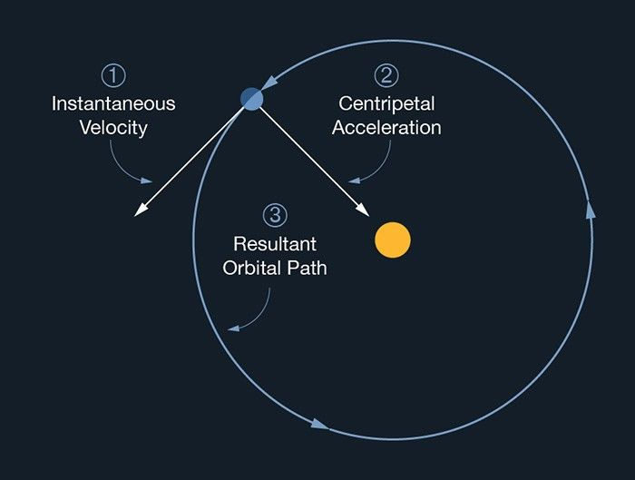
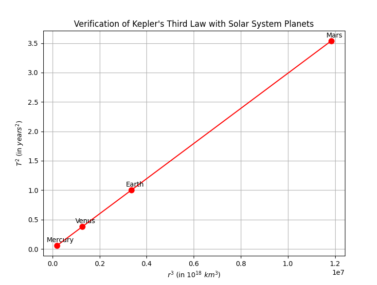

1️⃣
Gravity
Orbital Period and Orbital Radius

1. Derivation of the \(T^2 \propto r^3\) Kepler Formula
First, let's define:
\(T\) is the orbital period, the time it takes for a body (like a planet) to complete one full orbit around a central mass (like the Sun).
We start with Newton's Law of Universal Gravitation and circular motion concepts.
Gravitational force provides the necessary centripetal force for a planet in a circular orbit:
\(F_{\text{gravity}} = F_{\text{centripetal}}\)
\(\frac{GMm}{r^2} = \frac{mv^2}{r}\)
Where:
- \(G\) is the gravitational constant
- \(M\) is the mass of the central body (e.g., the Sun),
- \(m\) is the mass of the orbiting object (e.g., a planet),
- \(r\) is the orbital radius,
- \(v\) is the orbital speed.
Simplify:
\(GM = rv^2\)
Orbital period \(T\) is the time for one full orbit:
\(T = \frac{2\pi r}{v} \quad \text{thus} \quad v = \frac{2\pi r}{T}\)
Substitute \(v\) back:
\(GM = r \left(\frac{2\pi r}{T}\right)^2\)
\(GM = r \cdot \frac{4\pi^2 r^2}{T^2}\)
\(GM = \frac{4\pi^2 r^3}{T^2}\)
Now solving for \(T^2\):
\(T^2 = \frac{4\pi^2}{GM} r^3\)
This is Kepler’s Third Law for circular orbits:
🔸 \(T^2 \propto r^3\)

2. Verification: Use Mercury, Venus, Earth, Mars
Let's use real Solar System data:
| Planet | Orbital Radius \(r\) (in \(10^6\) km) | Orbital Period \(T\) (in Earth years) |
|---|---|---|
| Mercury | 57.9 | 0.241 |
| Venus | 108.2 | 0.615 |
| Earth | 149.6 | 1.000 |
| Mars | 227.9 | 1.881 |
Now we compute:
- \(r^3\)
- \(T^2\)
| Planet | \(r^3\) (in \(10^{18}\) km³) | \(T^2\) (in years²) |
|---|---|---|
| Mercury | 194.1 | 0.058 |
| Venus | 1267.4 | 0.378 |
| Earth | 3348.4 | 1.000 |
| Mars | 11841.0 | 3.538 |
and now new we must plot \(T^2\) versus \(r^3\) and show that it gives a straight line:

3. Find Mass of the Earth and Sun using Kepler's Law
From Kepler’s formula:
\(T^2 = \frac{4\pi^2}{GM} r^3 \quad \Rightarrow \quad M = \frac{4\pi^2 r^3}{G T^2}\)
- For Earth orbiting the Sun:
Given: - \(r = 1.496 \times 10^{11} \, \text{m}\) - \(T = 365.25 \times 24 \times 3600 = 31,557,600 \, \text{seconds}\) - \(G = 6.67430 \times 10^{-11} \, \text{m}^3 \text{kg}^{-1} \text{s}^{-2}\)
Substituting:
\(M_{\text{sun}} = \frac{4\pi^2 (1.496 \times 10^{11})^3}{(6.67430 \times 10^{-11})(31,557,600)^2}\)
You get:
\(M_{\text{sun}} \approx 1.989 \times 10^{30} \, \text{kg}\)
✅ Matches known Sun mass!
Similarly, for the Moon orbiting Earth:
- \(r = 3.844 \times 10^8 \, \text{m}\)
- \(T = 27.32 \times 24 \times 3600 = 2,360,448 \, \text{seconds}\)
\(M_{\text{earth}} = \frac{4\pi^2 (3.844 \times 10^8)^3}{(6.67430 \times 10^{-11})(2,360,448)^2}\)
You get:
\(M_{\text{earth}} \approx 5.972 \times 10^{24} \, \text{kg}\)
✅ Matches Earth mass!
Python Code to Simulate and Plot
import numpy as np
import matplotlib.pyplot as plt
import pandas as pd
planets = {
'Mercury': {'r': 57.9e6, 'T': 0.241},
'Venus': {'r': 108.2e6, 'T': 0.615},
'Earth': {'r': 149.6e6, 'T': 1.000},
'Mars': {'r': 227.9e6, 'T': 1.881}
}
data = {
'Planet': [],
'r (10^6 km)': [],
'T (years)': [],
'r³ (10^18 km³)': [],
'T² (years²)': []
}
for name, values in planets.items():
r = values['r']
T = values['T']
data['Planet'].append(name)
data['r (10^6 km)'].append(r)
data['T (years)'].append(T)
data['r³ (10^18 km³)'].append((r**3) / 1e18)
data['T² (years²)'].append(T**2)
df = pd.DataFrame(data)
print(df)
plt.plot(df['r³ (10^18 km³)'], df['T² (years²)'], 'ro-', markersize=8)
for i, txt in enumerate(df['Planet']):
plt.annotate(txt, (df['r³ (10^18 km³)'][i], df['T² (years²)'][i]), textcoords="offset points", xytext=(5,5), ha='center')
plt.xlabel(r'$r^3$ (in $10^{18}\ km^3$)')
plt.ylabel(r'$T^2$ (in $years^2$)')
plt.title('Verification of Kepler\'s Third Law with Solar System Planets')
plt.grid(True)
plt.show()
Additional Discussion: Elliptical Orbits
- In elliptical orbits, Kepler’s Third Law still holds, but \(r\) is replaced by the semi-major axis \(a\).
- The formula becomes:
\(T^2 = \frac{4\pi^2}{GM} a^3\)
- So even for comets or highly elliptical paths, this law connects time and distance!